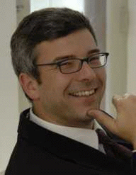

| Home |
| I-Files |
| Guestbook |
⚠ This CV has not been updated since 2009. For my current profile, please visit LinkedIn.

Ingo Boltz
Skype: ingo.boltz
Email:
Work Experience
The Carter Center, San Francisco, USA (August 2008 - November 2008)
Long Term Observer and Representative. Preparing observation mission of delegates of the People's Republic of China for the Presidential Elections 2008 and further developing the Center�s methodology for observing electronic elections.
Organization of American States, Washington, DC / Latin America (since December 2007)
Lead Technical Consultant. Elaborating comparative study of best practices in the application of information technology in electoral processes in 5 OAS member countries. Work involves exploratory missions to study countries, interviews of key stakeholders, and creation of comparison matrix.
The Carter Center, Asuncion, Paraguay (December 2007)
Electronic Voting Technology Consultant. Core member of exploratory mission preparing the observation of the Presidential Elections 2008 and further development of the Center�s methodology for observing electronic elections. Elaborated report detailing the electronic voting system and proposed audit process, strengths and weaknesses, as well as political / institutional aspects.
Maldives Foundation, Washington, DC, USA (August 2007 � November 2007)
Director. Worked with US academia and think tanks to involve them into the Maldives Governance Reform Process, including electoral reform in the run-up to the country�s first free multi-party elections in 2008. Raised awareness in the academic community of the impact of climate change on the Maldives, and other key issues.
The Carter Center, Caracas, Venezuela (November 2006 - January 2007)
Electronic Voting Technology Consultant. Member of the expert team sent by the Carter Center to observe the presidential elections 2006 and develop an improved methodology for observing electronic elections. Activities included:
- Observation of complete audit process (system source code and hardware audits, fingerprint system audits, post-election result audits, etc)
- Election day observation using preliminary new eVote observation methodology
- Elaboration of official report detailing the voting system and audit process specifics, strenghts and weaknesses, security analisys, international comparative study
HelpArgentina, Buenos Aires, Argentina (December 2005 � July 2007)
Chief Technology Officer. Defined IT strategy and policies of the organization. Specified and supervised implementation of various technology projects, such as:
- Selection and introduction of a Wiki-based Intranet and knowledge base system
- Introduction and Integration of Salesforce CRM
- Relaunch of institutional website on Drupal CMS platform, integrated with Salesforce
- Online application and document submission platform for NGO's seeking funding
Freelance NGO Technology Consultant (March 2004 � November 2005)
Clients and Projects:
Ashoka, Arlington, VA, USA and Buenos Aires, Argentina.
Designed and implemented a online research database application
based on Mambo CMS for the Ashoka ILI program.
The multi-lingual application allowed distributed collection
of data on youth social entrepreneurship organizations, using local
research teams in 12 Latin American countries,
thus significantly cutting travel cost and project time.
Research completed
before deadline and below budget.
System is currently being used by Ashoka for a similar project in Europe
to
expand the database, and will eventually include organizations world-wide.
CIPPEC Institute, Buenos Aires, Argentina.
Specified and supervised implementation of technology projects. Completed projects:
- Resident Expert on Electronic Voting Technology
- Analyzed several different electronic voting machine designs, as proposed by different vendors both domestic and international. Focus on fraud prevention and data integrity controls
- Compiled comparative study on the strengths and weaknesses of various electronic voting experiences worldwide, emphasizing both security and civic participation
- Publication: "Transparency in Electronic Voting through Software Audits and Paper Verification" in Tula, M.I.: Voto electronico (Editorial ARIEL / Planeta, 2005)
- Elaborated suggestions to amend and alter proposed legislation governing electronic voting in the City of Buenos Aires, in order to increase transparency and public participation, as well as information security of processes
- Implementation of online donation processing (credit card donations)
- Online donor relationship management (donation impact tracking, online constituency building)
- Online activism (online petitions, online voting / referenda)
HelpArgentina, Buenos Aires, Argentina.
Implemented various web-based productivity tools:
- Online application and document submission platform for NGO's seeking funding (comfortable multi-step approval system, inc. automated messaging, administration backend, etc)
- Interactive email campaign to win new donors (multiple-choice quiz, viral marketing method)
Cameron SDS � Sustainable Development Solutions, Brussels, Belgium.
Analyzed current Internet strategy of several European Sustainable Development Organizations / Networks, such as POLIS (promoting efficient public transport) and European Sustainable Cities and Towns Campaign (promoting local best practice projects).
- Developed recommendations for improvements and coherent overall strategy to best use the Internet
- Designed and specified web-based application for online-collaboration between network members, comprising knowledge base and community, best practice project database with rating and ranking capability, ask-the-expert system, and newsletter function.
gate5 AG, Berlin, Germany (October 2001 - February 2004)
Product Manager. Responsible for specification, roadmaps and project coordination for cityguide product. Multi-channel location based system development: PDA, mobile phone (WAP/SMS/MMS), and Web.
Arthur D. Little International, Berlin, Germany (July 2001 - August 2001)
Mobile Business Consultant. Develop mBusiness projects (concept and technical specification) in cooperation with mLab of ADL Switzerland.
I-D Media AG, Berlin, Germany / Z�rich, Switzerland (June 2000 - June 2001)
Technical Project Manager. Designed mobile Banking services of Y-O-U Bank (Internet Banking Project of Bank Vontobel). Supervised the production of a prototype, and participated in negotiations of service level agreements and vendor selection for the final implementation. Solution featured:
- Multi-channel delivery (WAP, SMS, PDA)
- International, operator-independent, secure access (wml-script based encryption, MSISDN authentification)
- Web-based profiling and configuration
IT Consultant. Contributed to various pitches for mCommerce projects. Advised on mobile extension of a community software platform.
German National Service (Peace Corps), Pretoria, Southafrica (Sept. 1998 - Apr. 2000)
St. Mary's Diocesan School for Girls - Outreach Program, Atteridgeville Township
Adult Computer Trainer. Coordinated program and performed adult computer training for staff of disadvantaged primary schools.
- Designed program structure, selected lesson contents and prepared teaching materials.
- Trained school staff in MS Word, Excel, PowerPoint, Access and Internet/E-mail use.
- Trained Outreach project staff in various IT topics and preparation of teaching materials
- Maintained Outreach project website
- Performed maintenance for project hardware (PC Lab)
Holy Trinity Catholic Secondary School, Atteridgeville Township
Computer Science Teacher. Taught classes for one full school year.
- Designed and taught full curriculum (Learning how to use MS Windows, MS Office Suite and graphics software, through motivating project work like MS Word poem writing competitions and Paint Best Picture Olympiad)
- Prepared comprehensive set of teaching materials (example files, overhead transparencies, etc.)
- Trained co-teacher in didactic skills and various IT topics, as well as preparation of teaching materials
- Upgraded and repaired school's computer lab
IMEC Institute, Leuven, Belgium (Sept. 1997 - Aug. 1998)
Technical/Research Internship and Diploma Thesis:
- Supervised installation, start-up and operation of prototype electrical linewidth prober (submicron semiconductor process development, 0.18 µm generation program).
- Contributed to joint research with industrial partners (Philips, AMD, Texas Instruments).
- Received complementary training in Deep UV Lithography.
- Completed masters thesis incorporating IMEC as case study subject.
Advanced Micro Devices (AMD), Dresden, Germany (Mar. 1997 - Sept. 1997)
Business Administration Internship
- Assisted Chief Training Manager in planning and coordinating new employee training.
- Designed training programs and performed administrative duties.
Education
Dresden University of Technology, Dresden, Germany (1992-1998)
- Masters Degree in Industrial Engineering (Diplom-Wirtschaftsingenieur); Grade 1.7
- Business Majors: Innovation Management and Controlling
- Technical Major: Electrical Engineering (Semiconductor Technology)
- Final thesis: Regional development through creation of high technology industry; Grade 1.0
Boston University, Boston, MA, USA (1994-1995)
- One year exchange program
- Awarded Full Scholarship of Dresdner Bank Cultural Foundation
- Course work: Management Policy, International Management, International Finance, Financial Derivatives, Entrepreneurship; Overall GPA: 3.73
IT Skills
- Application Design / Functional Specification for Software Development
- Project Management of Software Projects
- Knowledge of Mobile Internet related information architectures
- Various Productivity Software Packages
Language Skills
- Fluent in English, German, and Spanish
- Intermediate knowledge of Dutch
Volunteering
Johannes House Hospice and Mohau Center, Pretoria, South Africa (1998-99)
Administrative Assistant. Performed various duties to assist in running work in hospice for adults suffering from HIV / AIDS and cancer in terminal stages
- Run transactions with health insurances / billing
- Acquired medications from state hospital system
- Performed computer-related duties / maintenance
- Ran project errands / transport jobs
Princess Diana of Wales / Mohau Center – Orphanage and Hospice for Children Affected by HIV, Kalafong Hospital, Atteridgeville Township, Pretoria, South Africa (Jan. 2000 - Mar. 2000)
Child care worker / Administrative Assistant. Worked with HIV-positive children (newborn to 7 years) and assisted in administrative duties running the project.
- Worked in 24hrs childcare / lived on-site
- Worked in intellectual stimulation program for older children (ages 5-7)
- Assisted with project finance tracking and inventory
- Performed hardware maintenance
Dresden University of Technology (1996-97)
- Organized social events and excursions for incoming international students.
- Taught inline skating courses.
Student Organization IPC (1995-96)
- Acquired internship positions for German students in companies in Singapore.
- Presented IPC personally to client CEOs in Singapore in 1996.
Student Organization AIESEC (1992-94)
- Raised funds for projects and conferences, presented the organization to potential sponsors.
- Worked with international trainees from the AIESEC exchange program.